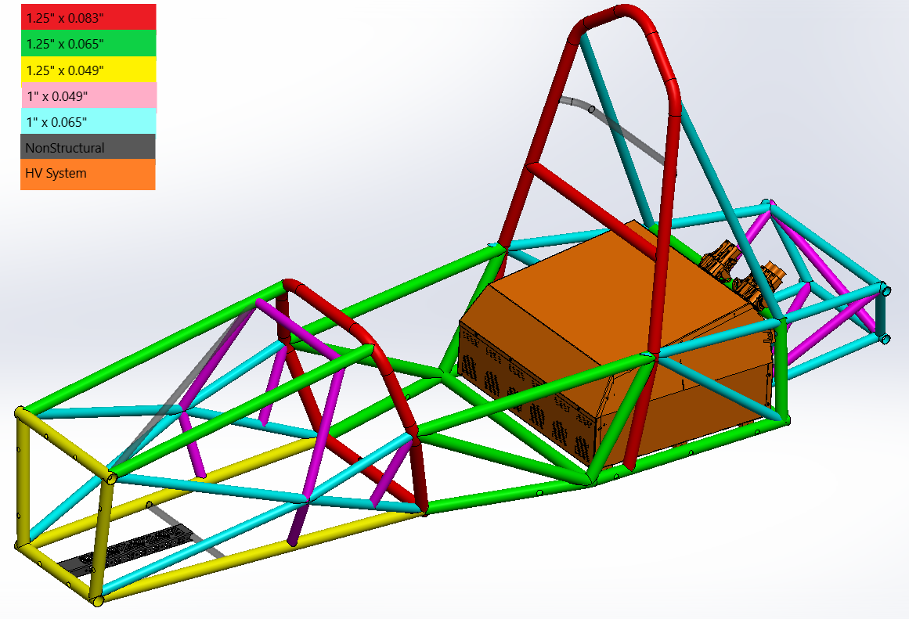
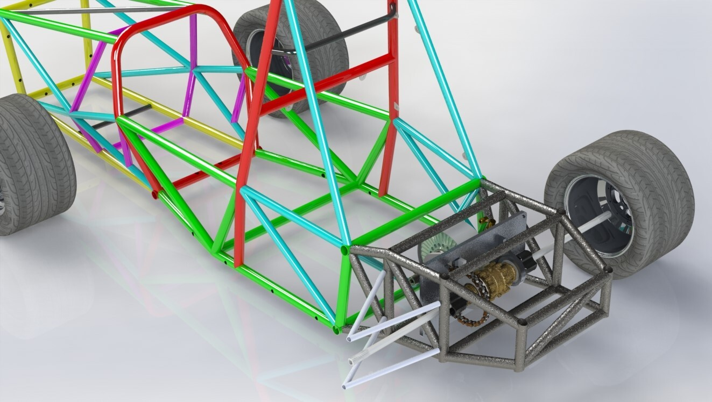
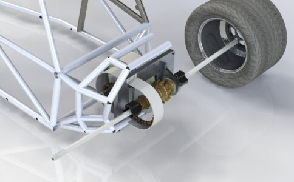
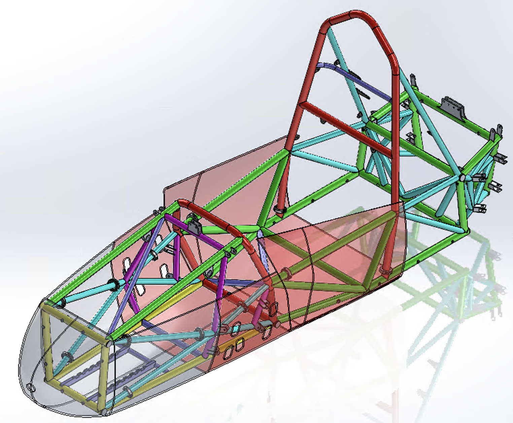
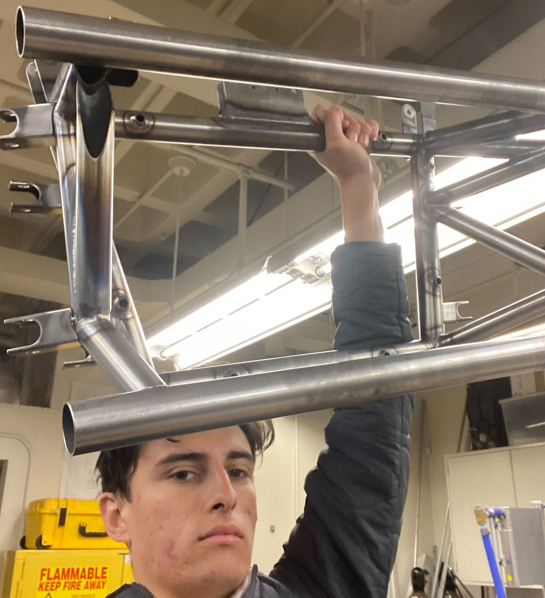

Full CAD Model
In this project, I was given the unique challenge of only redesigning the rear half of an IC chassis to become an EV chassis. The fore part of the EV chassis has the same suspension pick up points, pedal box rail, and steering column as its previous IC chassis.

Design Considerations
The drivetrain plates in our first EV chassis did not align properly. In addition, the toe link while kinematically correct, was in a position that looked subject to shear stress that would snap it. For these reasons, my chassis had to accommodate both of these problems.

First Iteration
This CAD shows the first iteration of our new chassis. I was really struggling with suspension pick up points, and packaging the drivetrain so that parts were not too tightly toleranced.

Second Iteration
In this version, I switched to a hanging differential drivetrain plate that needed stronger tubes in the rear. In addition, I tried to create suspension pick up points at the nodes of the frame by making that square structure.

Final Chassis with Body
This was the final version of the chassis with the nosecone overlayed on it. In a future iteration, I would want to redesign the high voltage battery pack and inverter to be in a more simplified shape that is dictated by the suspension points.

Tube Manufacturing and Welding
Columbia does not have the facilities to weld a full chassis in house. But, I spearheaded the creation of documentation for manufacturing of the chassis out of house. In addition, I created jigs and documents for how to make modifications to the chassis. This photo is the final rear for our EV chassis.

FEA
In addition, I performed various FEAs to simulate cornering, braking, and various loads on the chassis. This gif shows the Torsional Moment of Inertia.